10 部片单 · 恐怖 / 科幻 / 惊悚 / 悬疑 / 剧情
| # | 片名 | 类型 | 评分 / 状态 |
|---|---|---|---|
| 01 | 见鬼 | 恐怖 / 悬疑 / 灵异（中国香港·新加坡） | 7.1 / 64% / 6.6 |
| 02 | 昆池岩 | 恐怖 / 伪纪录 / 灵异（韩国） | 6.5 / 90% / 6.4 |
| 03 | 孤儿怨 | 恐怖 / 惊悚 / 心理 | 8.0 / 71% / 7.0 |
| 04 | 惊声尖叫 | 恐怖 / 惊悚 / 悬疑（元恐怖） | 7.2 / 79% / 7.3 |
| 05 | 寄生兽 | 科幻 / 恐怖 / 动作（日本） | 7.3 / 86% / 7.1 |
| 06 | 明日边缘 | 科幻 / 动作 / 战争 | 8.1 / 91% / 7.9 |
| 07 | 寂静岭 | 恐怖 / 悬疑 / 灵异（美国·法国·加拿大） | 7.4 / 31% / 6.6 |
| 08 | 致命玩笑 | 惊悚 / 恐怖 / 公路（美国） | 7.1 / 57% / 6.5 |
| 09 | 人皮客栈 | 恐怖 / 惊悚 / 剥削（美国） | 6.4 / 60% / 5.8 |
| 10 | 死亡录像 | 恐怖 / 伪纪录 / 丧尸（西班牙） | 7.4 / 90% / 7.5 |
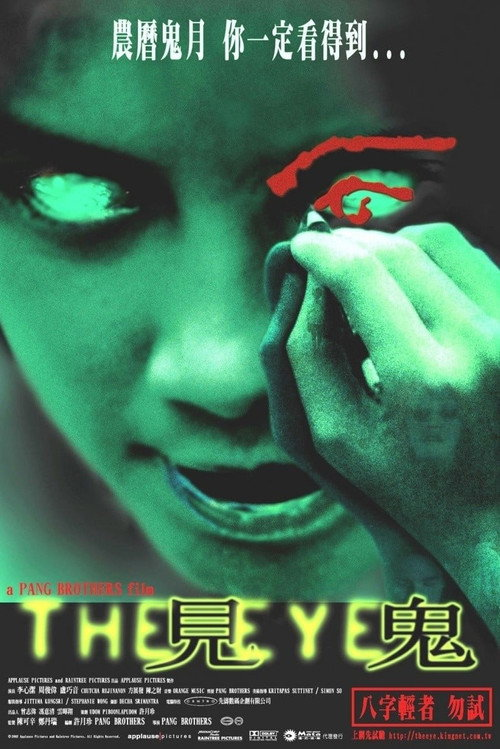
见鬼 The Eye
她终于能看见了。可看见的，不只是光。
剧情梗概
盲了二十年的年轻小提琴手黄嘉汶接受了角膜移植，拆下绷带的那一刻，世界重新有了颜色——也重新有了不该有的东西。她开始看见常人看不见的鬼影：走廊尽头站着的人、电梯里多出来的乘客、深夜街角被拖走的魂。她循着捐献者的线索追查，发现那位匿名捐赠者生前也并非「正常人」，而自己眼里的世界，正一点点裂开。
亮点
- 彭氏兄弟（彭顺、彭发）联合编导，原本是香港金牌剪辑师，凭《无间道》《风云》拿过金像奖最佳剪辑，转做导演后以本片立住了亚洲现代灵异恐怖的美学。
- 李心洁饰演女主，凭这个角色拿下第 39 届金马奖最佳女主角，清冷、神经质又脆弱的气质成了华语「通灵女主」的范本。
- 片名 The Eye 一语双关：既是移植来的「眼睛」，也是看穿阴阳的「天眼」；全片几乎不靠 Jump scare，靠氛围与声音把人浸进冷汗里。
- 影片在亚洲掀起翻拍潮：好莱坞 2008 年推出娜奥米·沃茨主演的英文版，泰国、印度也各自翻拍，足见其母题穿透力。
- 美术与配乐刻意压到极简，把「看得见鬼」的设定拍出了病理感而非神怪感。
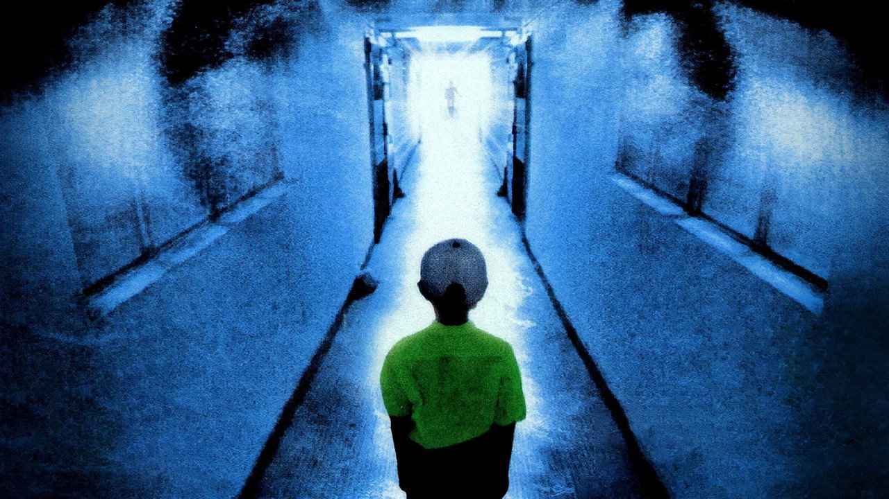
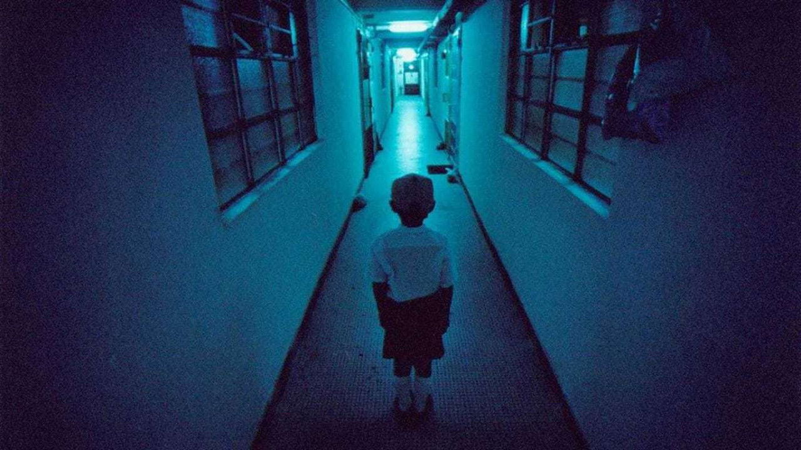
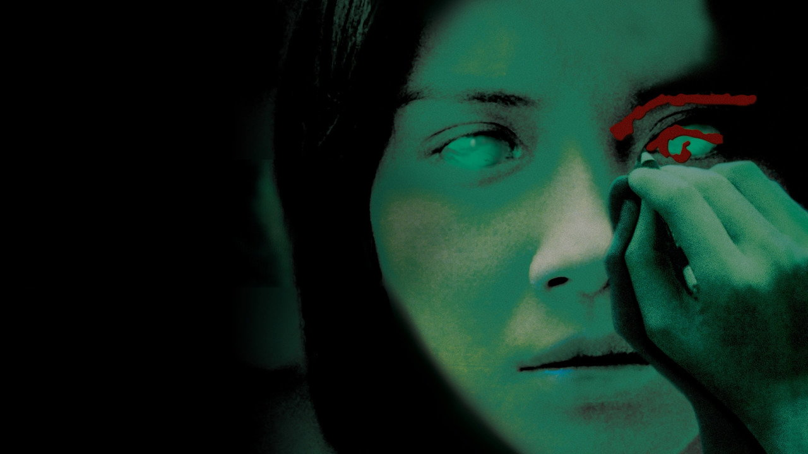
导演与主创 · 他们的历史作品
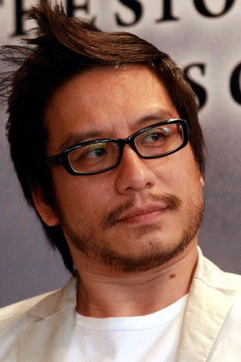
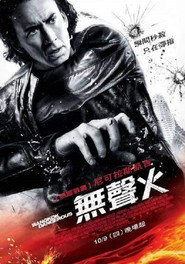
曼谷杀手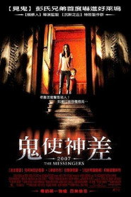
鬼使神差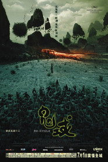
鬼域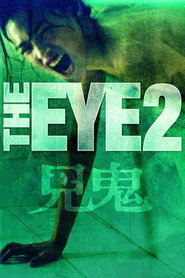
见鬼2 夺宝联盟
夺宝联盟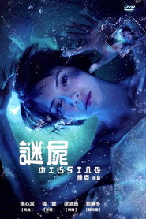
深海寻人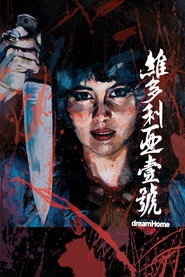
维多利亚一号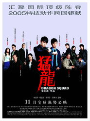
猛龙短评（轻微剧透）
《见鬼》最让人后劲大的，是它把「重见光明」这个本该治愈的时刻，反手变成一场更深的诅咒——你以为是礼物，其实是别人不愿背的债。彭氏兄弟聪明在从来不把这拍成降妖伏魔，黄嘉汶看见的不是鬼怪，是一个个没被好好安放的人，于是恐怖从「外」渗进「内」，变成一种对「看见真相」本身的恐惧。李心洁的表演是全片地基，她把那种「明明怕得发抖却还想看清」的执拗演得很真，金马影后不是白拿的。技术上，影片用极克制的镜头和声音设计取代了廉价惊吓，走廊、电梯、夜街这些日常空间被拍出了呼吸般的压迫。缺点要诚实：后半段回收悬念时稍显工整，部分转折靠「原来捐献者是这样的人」来收，略显套路；烂番茄 64% 说明海外观众对它的慢热不太买账。但它胜在气质统一、余味长。轻微剧透：真正的落点不是驱鬼，而是女主终于学会——有些东西，不必看清也能放下。
为什么值得一看
喜欢《蔷花红莲》《哭声》《昆池岩》这类「东方灵异 + 心理压迫」的观众；偏爱慢热、重氛围、少血浆的恐怖片的人。含少量灵异惊吓画面（非血腥），可放心看。内地未引进，流媒体可看。
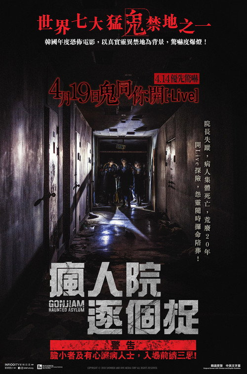
昆池岩 Gonjiam: Haunted Asylum
六个年轻人进了一栋上过全球七大鬼地的医院，想红。直播停的那刻，没人出来。
剧情梗概
网络灵异节目《恐怖世代》的主持人带着六名成员，闯进被 CNN 评为「全球七大恐怖圣地」之一的昆池岩废弃精神病院。他们装好摄像头、连上直播，目标是推开传说中备受诅咒的 401 室。起初一切像是博眼球的闹剧，但随着设备一个接一个失灵、成员一个接一个失联，这场真人秀逐渐变成一场没有剪辑、没有暂停的死亡实况。
亮点
- 郑凡植执导，把「伪纪录 + 真实灵异地」拍成了现象级：本片在韩国以极小成本换来高回报，是韩式 found-footage 的标杆之一。
- 全片几乎一镜到底的「直播」视角，观众和角色共享信息差，缺氧感被焊死在屏幕上。
- 魏河俊饰演召集人、也是全片的「定海神针」，后来凭《鱿鱼游戏》在全球走红。
- 昆池岩精神病院是真实存在的都市传说地标，影片巧妙利用了观众对「地名是真的」的恐惧。
- 几乎没有特效，恐怖来自空间、声音与「镜头后面还有谁」的想象——是伪纪录里少见的克制派。
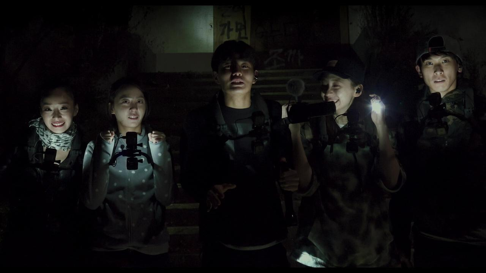
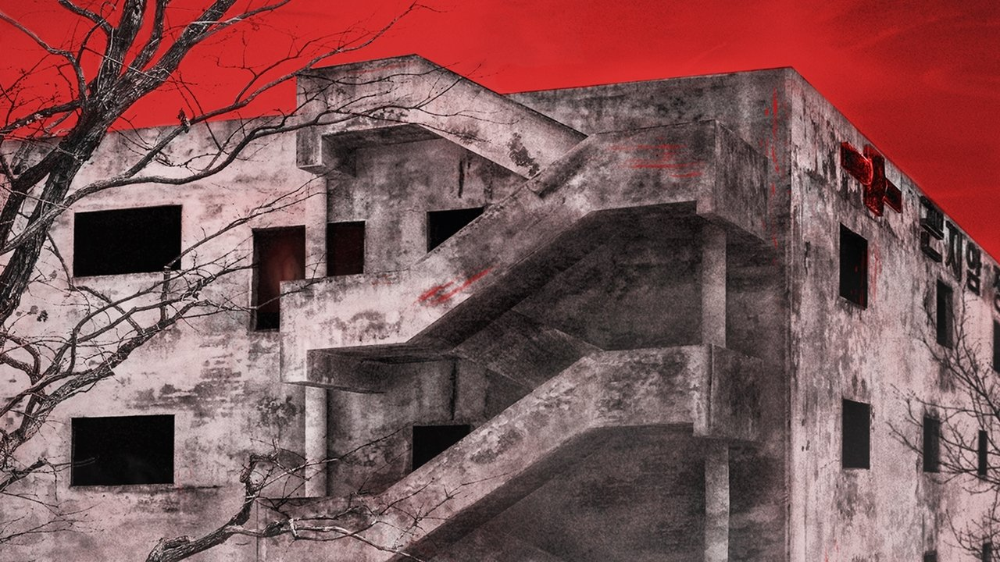
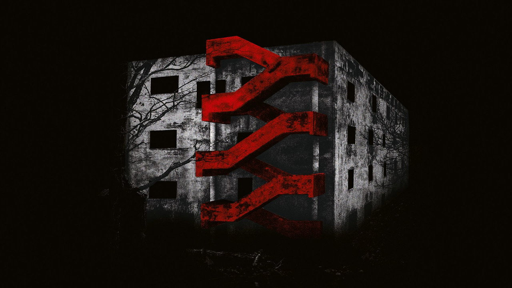
导演与主创 · 他们的历史作品
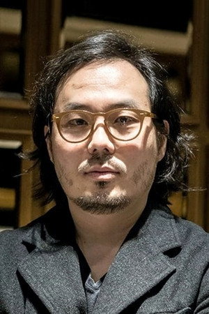
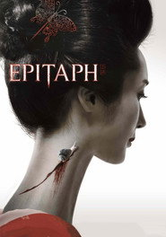
奇谈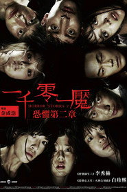
恐怖故事2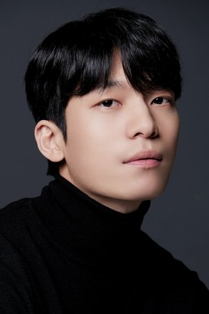
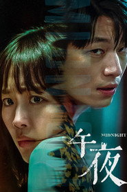
午夜 鱿鱼游戏： 第二季 制作特辑
鱿鱼游戏： 第二季 制作特辑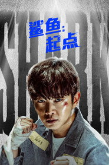
鲨鱼：起点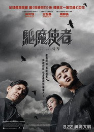
阴曹使者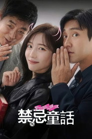
禁忌童话短评（轻微剧透）
《昆池岩》最好的地方是它比你先怕——它知道你在看直播，于是把「围观」本身变成了共犯。郑凡植的镜头几乎不解释，只让你跟着那台晃动的摄像机往 401 室里钻，越往前越安静，安静到你能听见自己心跳盖过画外音。它真正高明的是对「作死」动机的写实：这群年轻人不是被逼的，是主动想红，于是当恐怖降临时，你一边替他们揪心一边又觉得「这口饭是你自己要吃的」。魏河俊是全片的锚，他在混乱里越冷静，你越慌。缺点也得讲：中段为了铺满 90 分钟，有些惊吓点重复、节奏略拖；部分观众觉得结尾的「超自然显现」稍微露了怯。但烂番茄 90%、IMDb 口碑两极里偏向吓人，说明它达成了伪纪录最核心的使命——让你回家不敢关灯。轻微剧透：那扇 401 室的门推开后，逃出去的代价比留下更可怕。
为什么值得一看
喜欢《死亡录像》《昆池岩》同类伪纪录、以及《哭声》《蔷花红莲》韩式灵异的观众；能接受手持镜头晃动与实时压迫感的人。含写实向惊吓与灵异画面（无过度血腥）。内地未引进。
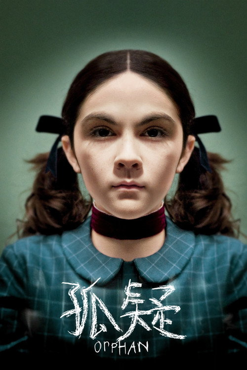
孤儿怨 Orphan
他们领养了一个九岁的女孩，以为治好了丧子之痛。后来发现——该害怕的是他们。
剧情梗概
痛失未出生孩子的夫妇凯特与约翰，决定领养一个看似乖巧的九岁女孩 Esther。Esther 举止成熟得过分、画出令人不安的画，又屡屡在家庭里挑起暗涌。凯特越来越觉得这个「天使般的孩子」藏着什么，可没人信她——直到那个秘密近到贴着脸。
亮点
- 佐米·希尔拉（Jaume Collet-Serra）执导，本片是他早期代表作，后来拍出《空中营救》《丛林奇航》《黑亚当》。
- 伊莎贝拉·弗尔曼出演时仅 11 岁，把「甜美女孩」与「深渊」的反差演到让人脊背发凉，是童星惊悚表演的范本。
- 剧本由《电锯惊魂》编剧雷·沃纳尔参与打磨，反转建立在「你以为你在保护孩子，其实你在豢养怪物」之上。
- 维拉·法梅加饰演的母亲是全片情绪核心，她把「丧子创伤 + 母性直觉」演得又疼又准。
- 影片在「养父母 vs 问题儿童」的家庭剧外壳下，藏了一个被反复模仿的惊人设定。
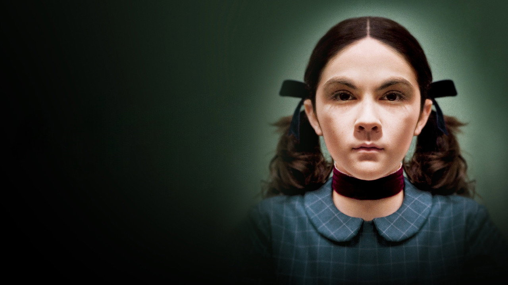
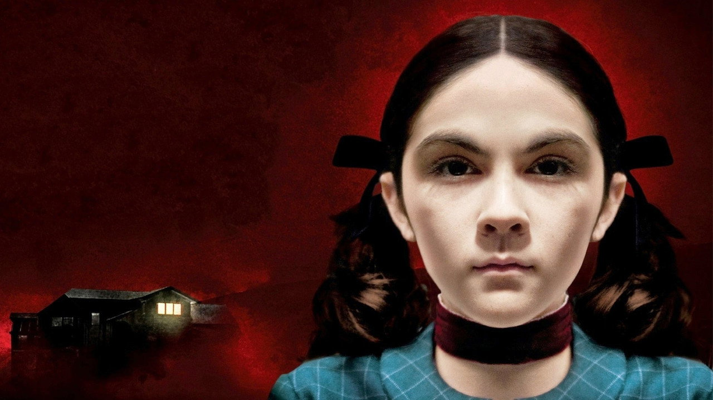
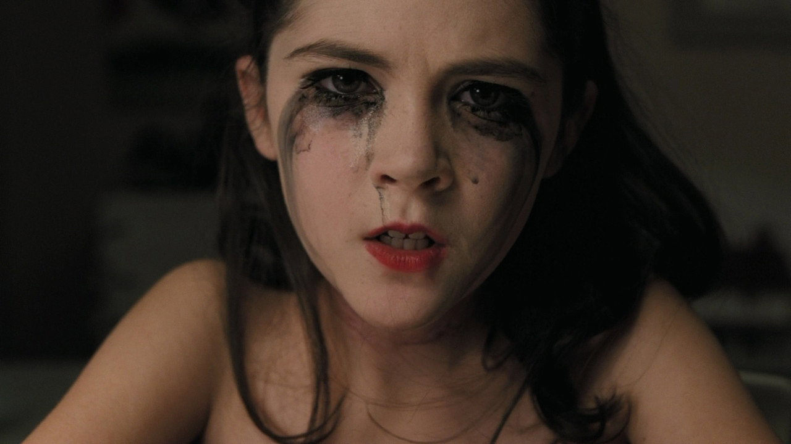
导演与主创 · 他们的历史作品

 黑亚当
黑亚当 丛林奇航
丛林奇航 空中营救
空中营救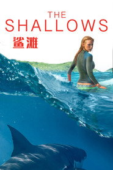
鲨滩
 招魂
招魂 招魂2
招魂2 招魂3
招魂3 穿条纹睡衣的男孩
穿条纹睡衣的男孩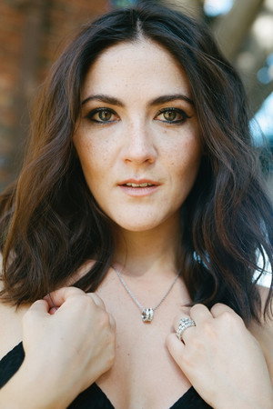
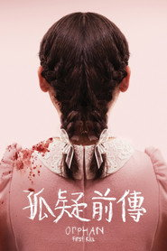
孤儿怨：首杀 饥饿游戏
饥饿游戏 重返地球
重返地球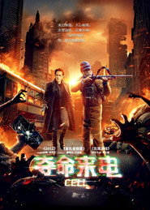
夺命来电短评（轻微剧透）
《孤儿怨》最狠的一笔，是它先让你放松——前四十分钟它看起来就是一部关于丧子夫妇领养治愈的家庭剧，直到 Esther 的眼神开始不对，你才意识到自己被喂了一颗定时炸弹。希尔拉把「可爱」这件事拍出了毛骨悚然的反向张力：当这个小女孩用超出年龄的世故去操控一整个家庭时，那种违和感比任何鬼都吓人。弗尔曼的表演是真正的杀器，她既不卖萌也不脸谱化，而是让你在她「过分懂事」的缝隙里看见底下那团黑。法梅加则把母亲的偏执与脆弱撑成了情感地基，正因为你信她的痛，你才跟着她一起被吓。缺点要诚实：部分设定经不起太细的推敲，结尾揭示时有人会觉得「这也太巧 / 太离谱」；它的恐惧高度依赖观众对「孩子」这个符号的安全感被打破。但豆瓣 8.0 说明它戳中了一种很普遍的怕——最亲密的关系里，藏着你最读不懂的人。轻微剧透：Esther 根本不是孩子，而她要的，是你以为给得起、其实给不起的东西。
为什么值得一看
喜欢《哭声》《蔷花红莲》《遗传厄运》这类「家庭关系里长出的恐怖」的观众；能接受心理惊悚与反转、对「童年 / 亲子关系」母题有共鸣的人。含写实向暴力与心理压迫（R 级），低龄与敏感者慎入。内地未引进。
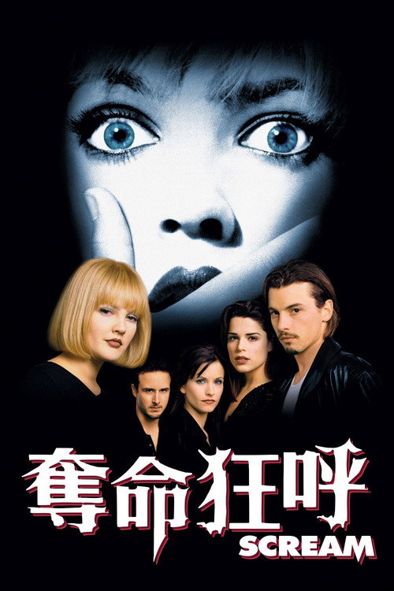
惊声尖叫 Scream
一个戴鬼脸面具的人开始按恐怖片的规矩杀人。问题是——没人知道规矩是谁写的。
剧情梗概
宁静的小镇伍兹波罗接连发生模仿恐怖片手法的谋杀，凶手戴着一张苍白的「鬼脸」面具，专挑熟知恐怖片套路的青少年下手。高中生 Sidney 在母亲遇害后，被卷进这场游戏，而凶手似乎就在她最亲近的人之间——每一通电话，都可能是死亡预告。
亮点
- 韦斯·克雷文执导，这位《猛鬼街》弗莱迪的创造者，用本片把「元恐怖」推上主流，重新定义了 90 年代的砍杀片。
- 剧本由凯文·威廉姆森操刀，角色会一边被杀一边讨论「恐怖片该怎么拍」，是系列最有辨识度的自反趣味。
- 内芙·坎贝尔饰演最终反抗规则的主角 Sidney，是 90 年代青春恐怖片最具代表性的「幸存女孩」。
- 鬼脸面具（Ghostface）此后成为流行文化符号，至今仍在续作与恶搞里反复出现。
- 影片在「致敬」与「解构」之间走钢丝，既满足砍杀片的爽感，又嘲笑砍杀片的套路。
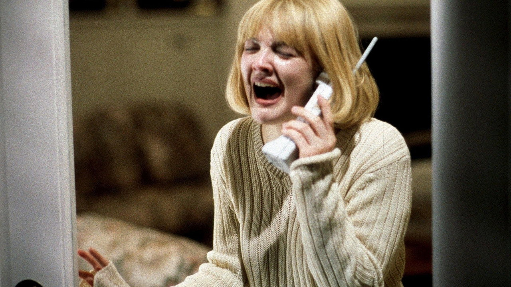
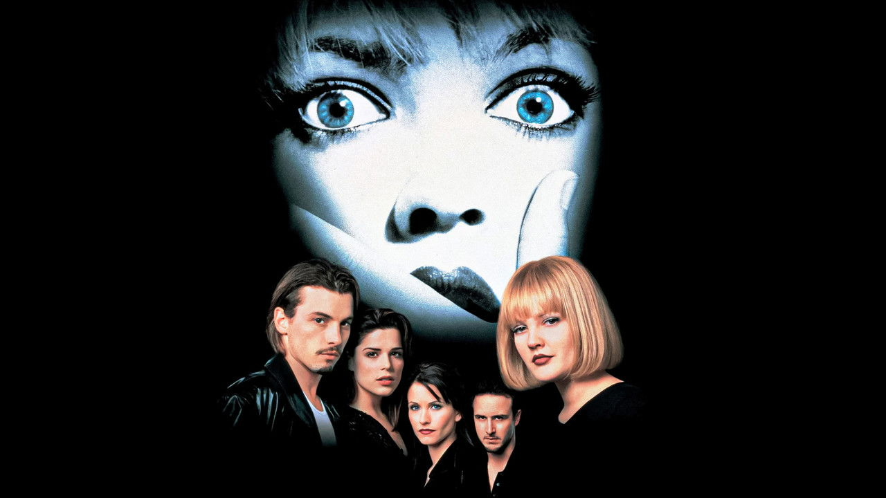
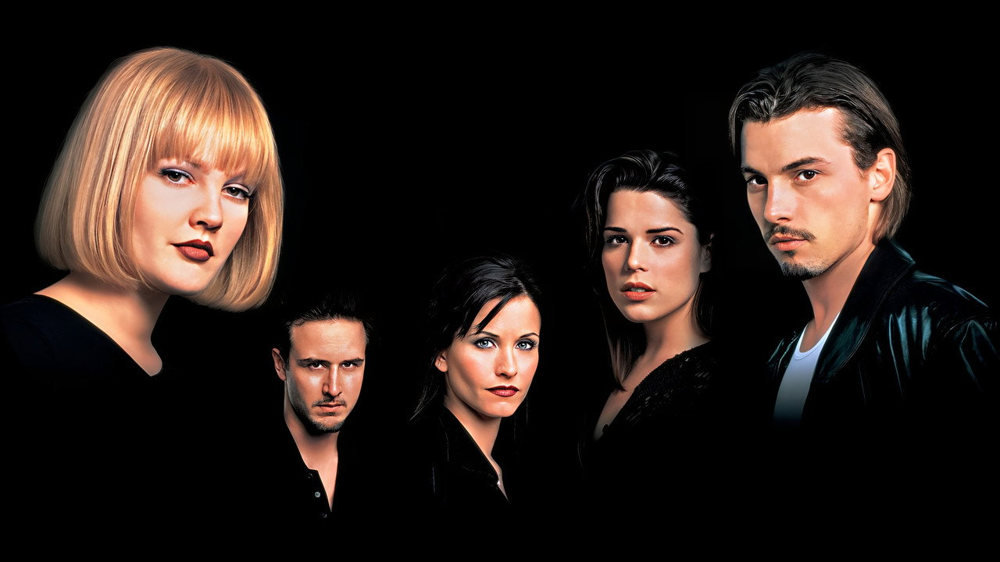
导演与主创 · 他们的历史作品
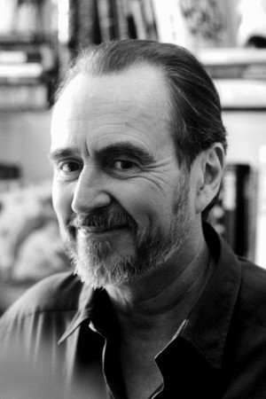
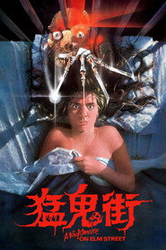
猛鬼街 惊声尖叫2
惊声尖叫2 惊声尖叫4
惊声尖叫4 惊声尖叫3
惊声尖叫3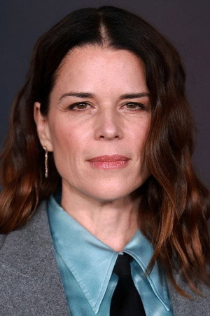
惊声尖叫2惊声尖叫4惊声尖叫3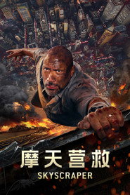
摩天营救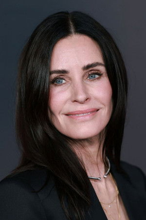
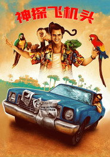
神探飞机头惊声尖叫2惊声尖叫4惊声尖叫3短评（轻微剧透）
《惊声尖叫》厉害的地方是它比观众先笑出来——它太清楚你看过多少部恐怖片了，于是一边用经典桥段吓你，一边让角色自己把桥段拆开来讲给你听，这种「我知情故我更怕」的元叙事，是它碾压同期砍杀片的原因。克雷文没有丢掉恐怖片的本分：面具、电话、暗处的脚步声，照样让你攥紧枕头；但他又聪明地让每个角色都带着「我是不是下一个」的自觉，把恐惧从「鬼来了」升级成「谁都可能是鬼」。坎贝尔的 Sidney 之所以成为标杆，是因为她不是被动尖叫的花瓶，而是最后把规则掀翻的人。缺点要讲：作为系列开篇，它的部分逻辑要靠「凶手动机」撑，揭晓时有人会觉得稍弱；但作为一部重新激活整个类型的作品，它的地位无可替代。轻微剧透：面具后面不是一个人，而是「规则」本身——当你以为看清了凶手，才发现这局从一开始就被写好了。
为什么值得一看
喜欢《林中小屋》《惊变28年》《电锯惊魂》这类「类型自反 + 聪明惊吓」的观众；想看一部既吓人又会心一笑的元恐怖经典的人。含砍杀式暴力（R 级）。内地未引进。
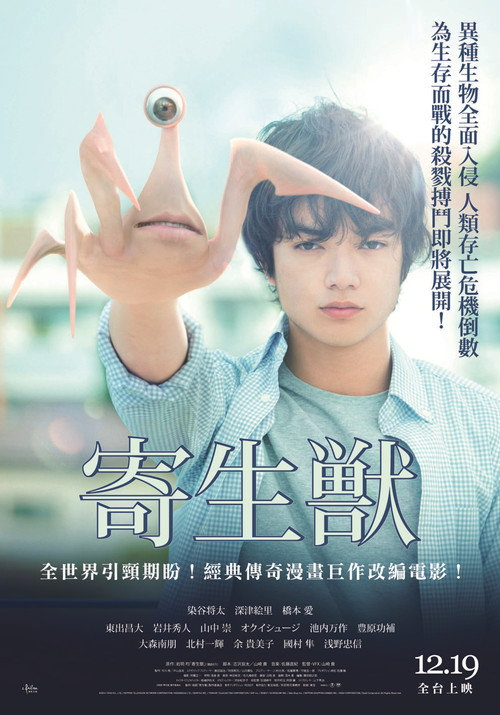
寄生兽 Parasyte: Part 1
他的右手，不再属于他。可正是这只手，决定他要不要还算是人。
剧情梗概
某个夜晚，神秘孢子像雨一样落向地球，钻进人类的身体、取代大脑，把人变成以同类为食的寄生兽。普通高中生泉新一在睡梦中被一只孢子侵入，却只占据了右手——名为「小右」的寄生兽与他形成了奇妙的共生。新一在保护家人、理解小右、对抗越来越庞大的寄生兽族群之间，被迫回答一个问题：什么才叫「人」。
亮点
- 山崎贵执导，把岩明均的同名科幻恐怖漫画电影化；他后来凭《哥斯拉-1.0》拿下奥斯卡最佳视效，本片已显露他对「巨型怪物 + 人性命题」的掌控。
- 染谷将太饰演新一，把普通少年的怯懦、成长与撕裂演得很真，是全片观众代入点。
- 「小右」由阿部隆史配音，这只理性、冷血又逐渐长出好奇心的右手，是全片最迷人的角色。
- 影片把「寄生」拍成了关于物种存亡、共情与自我认同的寓言，而不只是怪兽打怪。
- 动作与特效放到今时今日仍算扎实，母体寄生的黏液质感是日式科幻恐怖的招牌视觉。
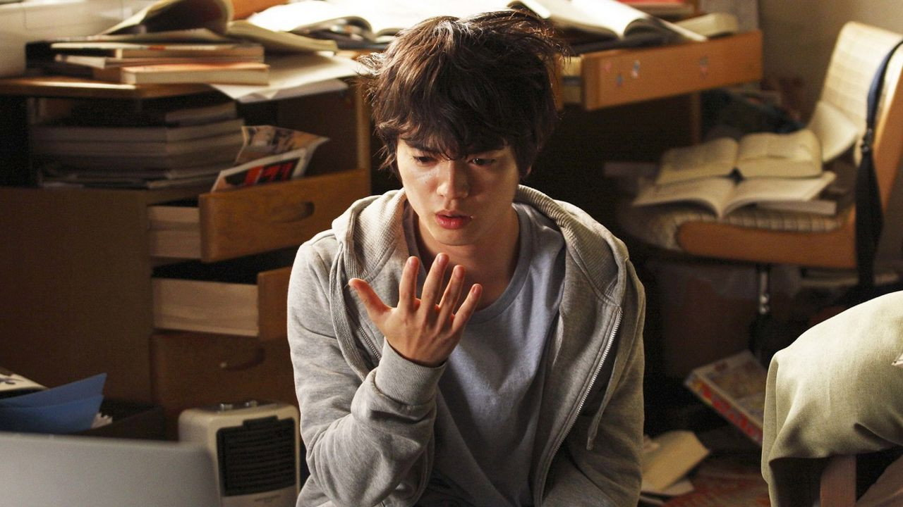
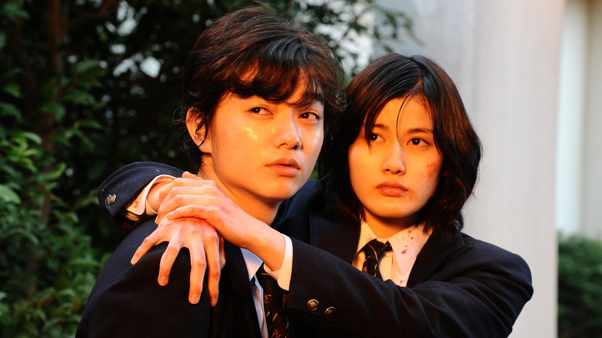
导演与主创 · 他们的历史作品

 哥斯拉-1.0
哥斯拉-1.0 哆啦A梦：伴我同行
哆啦A梦：伴我同行 鲁邦三世：THE FIRST
鲁邦三世：THE FIRST 宇宙战舰大和号
宇宙战舰大和号 怪物之子
怪物之子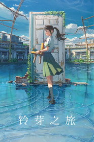
铃芽之旅短评（轻微剧透）
《寄生兽》真正迷人的，是它把「入侵」拍成了一种关系——小右不是反派，它是新一右手里那个永远冷静、永远问「人为什么这么矛盾」的声音，于是一部科幻恐怖片悄悄变成了关于「人之所以为人」的辩论赛。山崎贵没有把它拍成无脑打怪，每一次新一和小右的对话，都在逼观众站队：是该像人类一样自私又温情，还是像寄生兽一样纯粹又残忍。染谷将太的表演撑住了这种撕裂，他既要演被保护的高中生，又要演被右手带着走的另一半自己。技术上说，母体寄生的视觉至今不落伍，那种湿冷、黏腻、从身体里长出来的恐怖，是日式科幻的拿手好戏。缺点要诚实：作为上部，它更像是铺垫，部分观众会觉得节奏偏平、感情线略单薄；但作为一部「用怪物讲人性」的作品，它的后劲在结尾那句「人为什么要出生呢」里。轻微剧透：新一最后守住的，不是地球，而是「我选择站在哪一边」的自由。
为什么值得一看
喜欢《异形》《寄生兽》《E.T.》《降临》这类「非人他者倒逼人类自省」的科幻恐怖观众；对物种、共情、身份认同有兴趣的人。含怪物质感与写实动作（PG-12 / 适度血腥）。内地未引进。

明日边缘 Edge of Tomorrow
他死了，就回到今天早上。于是他用了无数个今天，去学会怎么不掉队地活下来。
剧情梗概
近未来，地球被一种名为「拟态」的外星生物入侵，人类节节败退。怯懦的征召官 Cage 被强行送上战场，却在交火中意外获得一种能力：每次死亡，都会回到出征前的同一天。他在一圈又一圈的时间循环里，从只会拖后腿的菜鸟，逐渐摸清敌人的规律，并与身经百战的战士 Rita 联手，试图找到终结战争的那把钥匙。
亮点
- 道格·里曼执导，擅长把动作与人物关系揉在一起，本片是他商业口碑双收的科幻作。
- 汤姆·克鲁斯彻底放下英雄光环，演一个一开始怂到骨子里的军官，靠一次次死与重来完成成长。
- 艾米莉·布朗特饰演全金属战士 Rita，飒爽、冷硬又藏着创伤，是全片的力量支点。
- 影片改编自日本小说《All You Need Is Kill》，把「时间循环 + 战争」拍出了游戏通关般的爽感。
- 「血溅式」拟态怪物设计与反复重置的战场调度，是近年科幻动作里最符合物理直觉的一场仗。
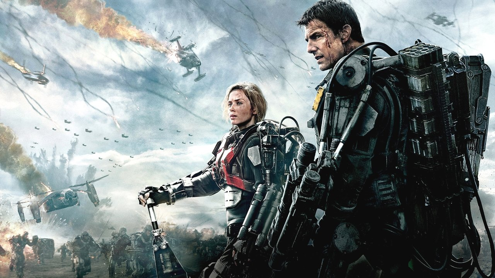
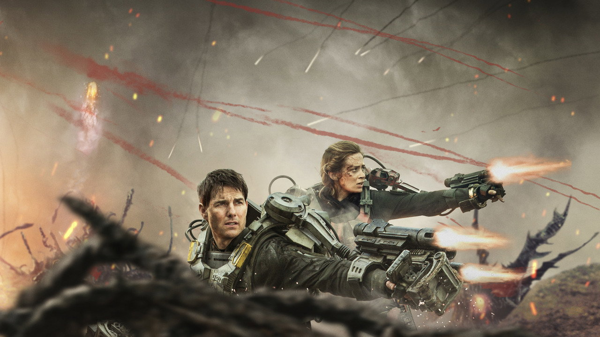
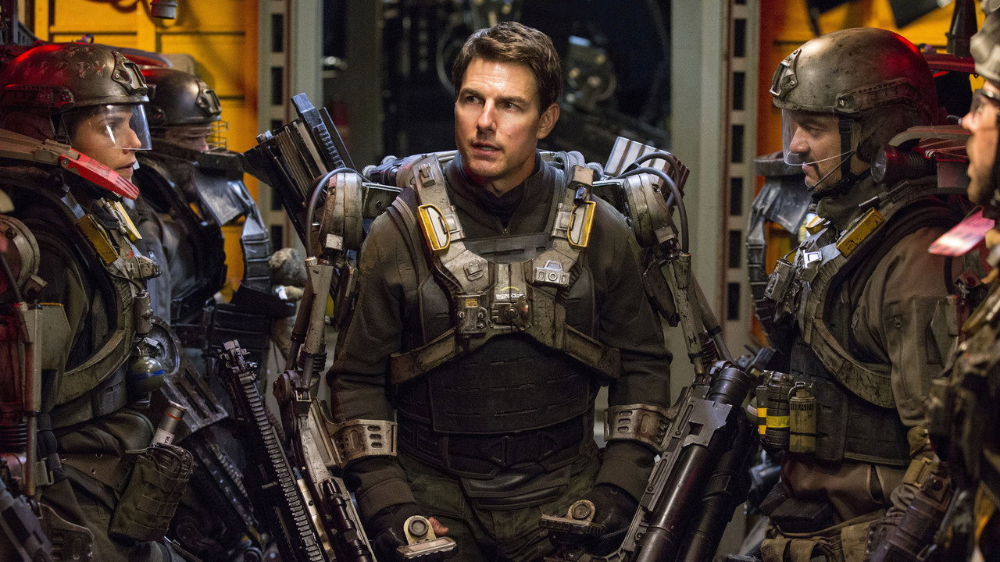
导演与主创 · 他们的历史作品
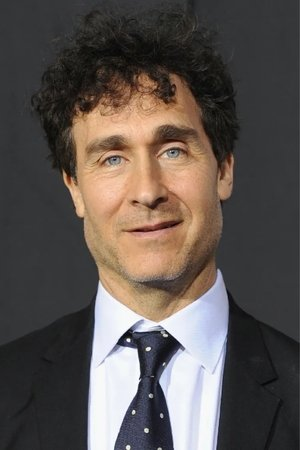
 史密斯夫妇
史密斯夫妇 谍影重重
谍影重重 美国行动
美国行动 遗落战境
遗落战境 Top Gun: Maverick
Top Gun: Maverick 碟中谍4：幽灵协议
碟中谍4：幽灵协议 碟中谍
碟中谍
 寂静之地
寂静之地 边境杀手
边境杀手 寂静之地2
寂静之地2 奥本海默
奥本海默短评（轻微剧透）
《明日边缘》聪明在它把「时间循环」这个被用滥的设定，重新焊进了一场真实的战争里——你不是在上班日复一日，你是在同一场该死的登陆战里反复死、反复学，于是循环不再是浪漫道具，而是最硬的残酷训练。里曼把每一次重置都拍得像玩家读档：观众和 Cage 一起背板、一起失误、一起在血里开窍，这种「共同成长」的爽感，是它碾压同类科幻的关键。阿汤哥这次最被低估的，是他愿意演得又狼狈又怂，一个不断被碾碎又爬起来的普通人，比任何天生英雄都动人；布朗特的 Rita 则是那根定海神针，她不解释、只战斗，反而把战争的冷压到了骨头里。缺点要讲：中段循环略显重复，部分转折靠「再死一次就懂了」推进；但它用极强的节奏把这点盖了过去。轻微剧透：Cage 最终要赢，靠的不是变强，而是终于愿意把命交给那个他一直在躲的真相。
为什么值得一看
喜欢《源代码》《降临》《盗梦空间》这类「时间 / 高概念科幻 + 精准动作」的观众；想看一部痛快、聪明、又不烧脑过度的科幻大片的人。含战争暴力与怪物战斗（PG-13），适合阖家观看。内地曾于 2014 年公映，流媒体可看。
寂静岭 Silent Hill
女儿夜游时只反复说一个名字：Silent Hill。母亲循着它开进浓雾，再没能开出来。
剧情梗概
女儿 Sharon 在睡梦中不断念叨一个叫「Silent Hill」的小镇，并出现诡异的梦游。母亲 Rose 不顾丈夫反对，带她前往这个早已被废弃的度假镇，想弄清楚女儿到底在怕什么。可一进入那片永远散不去的浓雾，现实便开始剥落：镇上满是灰烬、锈铁与邪教遗留的图腾，一个由「信仰」与「惩罚」统治的异界缓缓张开，Rose 在寻找女儿的路上，也一步步逼近自己不愿面对的东西。
亮点
- 克里斯托夫·甘斯执导，法国导演痴迷哥特与东方武侠美学，本片是他把游戏 IP 拍成「视听祭典」的野心之作。
- 美术与配乐高度还原游戏：永远的灰烬飘落、锈红的天空、护士与三角头的意象，是游戏粉的朝圣。
- 拉达·米切尔饰演执意寻女、独自闯入异界的母亲 Rose，是全片的情感引擎。
- 肖恩·宾饰演追妻而来的丈夫，是少数游走在现实与异界之间的「安全」成年人视角。
- 影片把宗教审判、集体罪恶与母性救赎揉成一锅，主题比一般恐怖片重。
导演与主创 · 他们的历史作品
 未来战警
未来战警 怒火救援
怒火救援
 火星救援
火星救援 指环王1：护戒使者
指环王1：护戒使者 木星上行
木星上行 特洛伊
特洛伊短评（轻微剧透）
《寂静岭》最特别的一点，是它不急着吓你，而是先把你泡进那片灰——永远飘着灰烬的镇子、锈掉的天空、空无一人的街道，这种「世界被按了暂停又被诅咒」的氛围，是全片最值回票价的部分。甘斯对游戏的还原近乎偏执，护士、三角头、学校地下那些场景，几乎是把玩家记忆搬上了银幕，对粉丝而言是朝圣，对路人而言则是足够陌生化的异界。它真正想讲的其实是「罪与罚」：那个镇子不是闹鬼，是一群人用信仰把自己活成了地狱，于是 Rose 的寻女之路，也是一条替所有人受审的路。缺点必须说清：它叙事松散、象征堆得太满，普通观众容易在大量意象里迷路，这也是烂番茄只有 31%、影评人普遍嫌它「沉闷又故弄玄虚」的原因；但它在国内豆瓣有 7.4，因为它把「氛围即恐怖」做到了极致。轻微剧透：Sharon 与 Rose 的关系，本身就是这个镇子诅咒的答案——她们本就是彼此要找、也最该放下的那个人。
为什么值得一看
喜欢《哭声》《蔷花红莲》《昆池岩》《咒怨》这类「异界 / 民俗 / 宗教恐怖」的观众；能接受慢节奏、重意象、重氛围的人（含写实向与心理惊吓）。内地未引进。
致命玩笑 Joy Ride
他们用对讲机调戏了一个卡车司机，叫他 Rusty Nail。然后发现——这个玩笑，对方记了一辈子。
剧情梗概
兄弟俩 Lewis 与 Fuller 接上哥哥暗恋的女孩 Venna，三人一起长途自驾。路上 Fuller 恶作剧，用路边对讲机冒充女声调戏一个自称「Rusty Nail」的卡车司机，本以为是个无伤大雅的笑话。可当那个司机顺着信号找上门、把玩笑当成挑衅，这场公路之旅就变成了不设终点的猎杀——车窗外那辆大卡车，永远在你后视镜里。
亮点
- 约翰·达尔执导，以新黑色犯罪片（《最后的诱惑》）闻名，本片是他少有的主流惊悚，把公路片拍出了密闭压迫感。
- 保罗·沃克饰演稳重的哥哥 Fuller，后来凭《速度与激情》成为动作明星，本片是他早期代表作之一。
- 斯蒂夫·扎恩饰演话痨弟弟 Lewis，负责全片的喜剧缓冲与「作死」担当。
- 影片用「对讲机」这个前智能手机时代的道具，把匿名威胁拍得既复古又毛骨悚然。
- 反派 Rusty Nail 始终几乎不露脸，靠声音与卡车的压迫感制造恐惧，是古典惊悚的克制派。
导演与主创 · 他们的历史作品

 速度与激情
速度与激情 速度与激情2
速度与激情2 速度与激情7
速度与激情7 速度与激情6
速度与激情6 猩球崛起3：终极之战
猩球崛起3：终极之战 达拉斯买家俱乐部
达拉斯买家俱乐部 恐龙当家
恐龙当家短评（轻微剧透）
《致命玩笑》最让人后背发凉的，是它讲了一个每个司机都做过的蠢事——在路上和陌生人较劲、开玩笑、以为对方听不见也伤不到你。约翰·达尔把这种「小恶作剧反噬」拍得极其精准：一开始是笑，慢慢变成不安，最后变成你绝不敢再回头看后视镜的恐惧。它聪明在反派几乎不露脸，Rusty Nail 就是那辆永远跟着你的大卡车，是「你招惹过的陌生人」的实体化，这种留白比直接亮刀更吓人。三位主演的化学反应也稳，沃克和扎恩一个稳一个贫，把公路片的轻松底色铺好，才让后面的黑更黑。缺点要诚实：中段逃脱与反杀的节奏略显套路，部分转折靠巧合；57% 的烂番茄说明它不算影评人宠儿。但它胜在「短平快」和设定扎实——它提醒你，路上那个你不认识的司机，可能正把你的玩笑记了一整本账。轻微剧透：玩笑的代价不是被吓一下，而是你身边的人，一个接一个替你付。
为什么值得一看
喜欢《狙击电话亭》《活埋》《恐怖直播》《致命玩笑》这类「密闭 / 公路高压惊悚」的观众；对匿名威胁、陌生人危险有兴趣的人。含写实向暴力（R 级），部分桥段较紧张。内地未引进。
人皮客栈 Hostel
他们以为那是欧陆艳遇的便宜客栈。前台微笑着收下钱——和你这条命。
剧情梗概
两个美国背包客与一位冰岛帅哥结伴欧洲行，被陌生旅人怂恿去斯洛伐克一家价格便宜、美女如云的客栈「放松」。他们欣然前往，却不知道这座小镇是富豪付费、任意虐杀游客的灰色江湖的入口。当其中一人莫名消失，幸存者才惊觉：自己不是客人，是商品。
亮点
- 伊莱·罗斯自编自导，昆汀·塔伦蒂诺担任制片人并力捧，本片是「新剥削恐怖」的引爆点。
- 影片开创了「torture porn」的争议与票房神话，直接催生了一个亚类型与两部续集。
- 杰伊·赫尔南德斯饰演主角 Paxton，从无忧背包客到亡命求生，是观众代入点。
- 德里克·理查森饰演天真软弱的 Josh，是全团最先坠入地狱的人，角色弧光最虐。
- 片名 Hostel 从此成了「看似平价实则致命的落脚点」的恐怖代名词。
导演与主创 · 他们的历史作品
 虎胆追凶
虎胆追凶 X特遣队
X特遣队 玩具总动员4
玩具总动员4 隔离区
隔离区短评（轻微剧透）
《人皮客栈》在恐怖史上是绕不开的一块——它不是拍得最吓人的，而是把「 backpacker 天堂」直接翻面给你看的那一下，太狠了。伊莱·罗斯借昆汀的监制手笔，先用一半片长让你沉浸在艳遇、啤酒、东欧阳光的旅行片氛围里，然后毫无预兆地把地板抽掉：原来那个微笑的前台、那场艳遇，全是屠宰场的引流。这种「信任被标价」的恐怖，比任何血浆都更让人不舒服，也正因为如此，它当年一边被骂「只为猎奇」、一边狂揽票房。优点要承认：它节奏利落、反转干脆，把「游客即猎物」的阶级隐喻拍得很直接；缺点更要讲清：它的暴力是刻意的、展示性的，观感粗暴，这也是烂番茄 60%、IMDb 5.8 偏低的原因，很多人（包括我）认为它输在「吓人靠的是残忍而非技巧」。轻微剧透：活下来的那个人，最后那一下「以牙还牙」，是影片唯一留给观众的喘息。
为什么值得一看
喜欢《致命玩笑》《电锯惊魂》《人皮客栈》同类「陌生人危险 / 生存惊悚」的观众；能承受高强度写实暴力与心理不适的人（R 级，含展示性虐杀，强烈建议慎入）。内地未引进。
死亡录像 [REC]
电视台记者跟拍消防夜班，楼被封了。镜头没关——因为它就是你的眼睛。
剧情梗概
电视台记者 Ángela 与摄像师 Pablo 跟随两名消防员上夜班做节目，原本只是轻松的民生跟拍。一通报警把众人引向一栋老旧公寓，里面的住户陷入诡异的狂乱，军方随即封锁整栋楼。被困在楼内的 Ángela 和 Pablo 举着摄像机，记录下从诡异到地狱的全过程——而镜头后面，有什么正顺着楼梯往上爬。
亮点
- 海梅·巴拉格罗与帕科·普拉扎联合执导，是西班牙现代恐怖的标杆组合，后来各自拍出《当你熟睡》《死亡录像3》。
- 全片「伪纪录 + 实时」的紧迫感极强，78 分钟几乎没有喘息，是 found-footage 里节奏最狠的一部。
- 曼奴拉·沃拉斯科本色出演记者 Ángela，手持话筒慌乱奔逃的镜头成为伪纪录恐怖的经典记忆。
- 影片直接启发了好莱坞翻拍版《隔离区》（Quarantine），但原版公认更冷、更狠。
- 结尾那段「手持镜头一路向下」的长镜，是伪纪录恐怖里被反复致敬的名场面。
导演与主创 · 他们的历史作品
短评（轻微剧透）
《死亡录像》最了不起的地方，是它用极低的预算和几乎只有一个机位，把你死死按在那栋楼里——没有配乐、没有旁观者、没有上帝视角，你看到的就是摄像机看到的，于是每一次画面晃动、每一声楼下传来的尖叫，都像发生在你眼前。巴拉格罗和普拉扎太懂伪纪录的命门：恐惧来自「信息不全」和「逃不出去」，所以他们让军方把楼一封、把规则一改，整栋公寓立刻变成一只慢慢收紧的胃。沃拉斯科的 Ángela 是全片的灵魂，她不是传统英雄，是个举着话筒、越怕越要往前冲的记者，那种「职业本能压过求生本能」的真实感，让最后的奔逃格外揪心。缺点要讲：手持镜头确实容易让部分观众头晕，结尾的揭示稍显超自然化；但烂番茄 90%、IMDb 7.5 说明它达成了 found-footage 的最高目标——让你回家后还对楼梯间多留一个心眼。轻微剧透：镜头最后往下照的那一下，不是结束，是告诉你——楼里最可怕的东西，刚刚一直跟你在一起。
为什么值得一看
喜欢《昆池岩》《活埋》《恐怖直播》《狙击电话亭》这类「密闭 / 伪纪录高压惊悚」的观众；能接受手持晃动与实时压迫的人（含写实向丧尸暴力，R 级）。内地未引进。